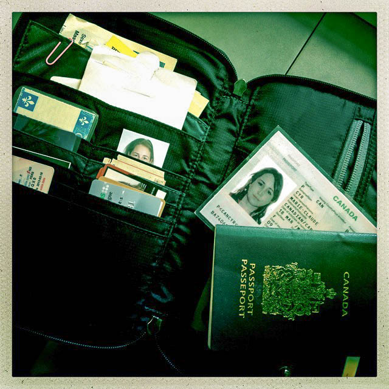
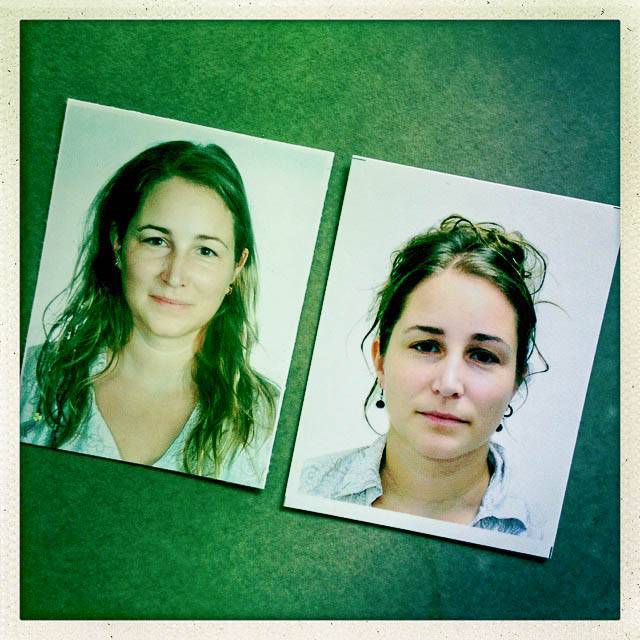
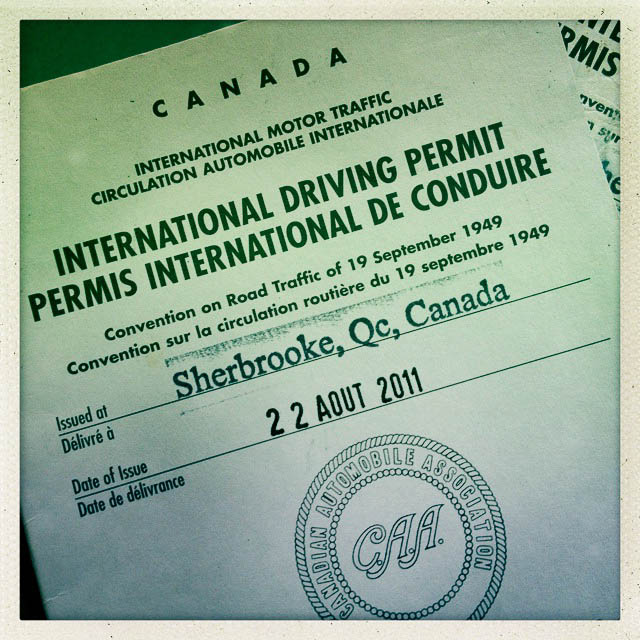
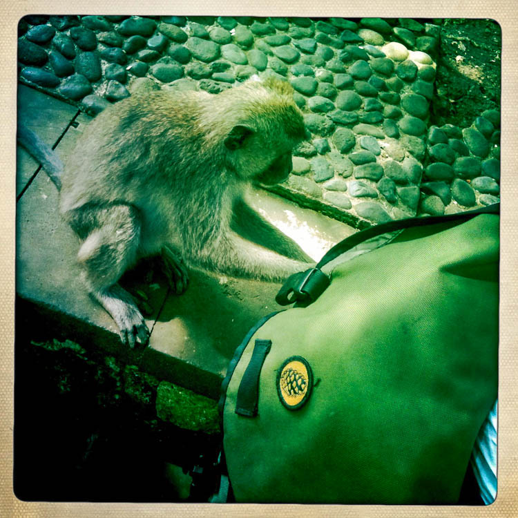

|  |
| Porte-documents MEQ qui peut contenir des feuille 8x10 pliées en 2! |
{kind=link}
- Passeport et copie plastifiée
- Visas et photos
- Permis de conduire international
- Argent, cartes de crédit et bancaires
- Assurances voyage (et RAMQ pour les québécois)
- Vaccins
- Copies et photos de vos documents
- Séparez vos documents pour minimiser le risque
- Cartes d'affaire
Passeport et copie plastifiée
Votre passeport restera l'item le plus précieux de votre sac tout au long de votre voyage. Nous avons toujours fait très attention pour ne pas le perdre car "perte de passport = fin de voyage"! Un de nos meilleur truc à été la photocopie plastifiée (idée empruntée à Maryse et Dany).
Avant de partir nous avons fait une photocopie couleur de la première page de notre passeport et l'avons fait plastifier. C'est donc ce que nous transportons au quotidien dans notre sac de jour. Si nous avions besoin de montrer notre passport pour un achat, une activité touristique ou autre, cette carte fait presque toujours l'affaire. Même au vietnam où on nous demandais toujours de laisser notre passeport à la réception, cette carte était acceptée. Cela nous a donc souvent permis de dormir plus tranquilles, sachant que notre passport était avec nous.
Certains vous dirons qu'il est préférable de confier le passport à la réception par sécurité, mais nous avons trop souvent vu des employés les laisser sur le bureau, offert aux voleurs et à la perte dans les petits établissements. Peu de gens réalisent la valeur d'un passeport occidental et c'est votre responsabilité de protéger ce document précieux. Personne n'apprécie de se retrouver sans papiers dans un pays étranger, aux règles et procédures radicalement différentes et sans connaissances de la langue locale.
Note sur les visas: La procédure habituelle pour l'obtention d'un visa exige que vous laissiez votre visa au consultat pour une, deux ou trois journées. Bien qu'il est stressant de le faire, c'est nécéssaire pour l'obtention du visa et, après tout, c'est un consulat et les employés n'ont pas intérêt à égarer votre passeport. Vous devrez donc rester dans la même ville le temps que le visa soit accordé. Ne partez pas en tournée dans le pays sans votre passeport.
|  |
| Les formats sont différents un peu partout, il ne faut pas s'en faire! |
{kind=link}
Plusieurs pays exigent qu'un visa soit obtenu avant l'entrée. Vous pouvez généralement vous le procurer du pays voisin, dans une ville d'importance. Une recherche s'impose pour vérifier où est le consulat et vous éviter des surprises. Si vous pensez visiter plus d'un pays qui demande un visa d'entrée, pensez à vous faire faire des photos avant le départ. Il n'est pas necessaire de payer une fortune pour des photos format passeport accréditées, un 8x10 papier photo avec photos petits formats, comme à l'école, c'est bon! D'un autre côté, c'est toujours facile de s'en faire faire partout, mais nous étions toujours bien contents d'en avoir sous la main au moment opportun.
Le processus d'obtention du visa est généralement assez simple. Souvent on vous demandera 1 à 2 photos, un formulaire de demande bien rempli, une photocopie de votre passport et, selon le pays ou le consulat, une preuve d'entrée et/ou sortie du pays, c'est-à-dire une photocopie de vos billets d'avion ou une impression du courriel de confirmation. Internet sera votre ami pour trouver l'information nécessaire.
Il est avisé de se renseigner avant de se présenter au consulat. Nous avons souvent vu des voyageurs perdus qui n'avaient pas de photos ou d'argent pour payer le visa. Une simple recherche vous évite l'embarras et les soupirs des officiers du consulat (qui après tout, pourrais vous refuser le visa qui vous coûte une somme significative).
|  |
| Depuis peu, il est possible de faire une demande de renouvellement par la poste. |
{kind=link}
Le permis international est souhaitable si vous pensez louer un véhicule à l'étranger. Personnellement, nous ne l'avons montré qu'une seul fois à un policier balinais, mais le document de l'intéressait pas vraiment, il n'attendait que quelques billets.
Ce document vous sera sûrement utile dans le cas d'un accident ou d'un litige... avec les assurances. En Australie, par exemple, les permis du pays de résidence sont acceptés pourvu qu'ils soient traduis en anglais.
Le permis international doit être obtenu dans le pays, province ou municipalité de résidence et la procédure diffère pour chacun. Au Québec, vous l'obtiendrai au CAA près de chez vous pour 25$ et il est bon pour un an seulement. Il peut maintenant être renouvelé à distance.
Argent, cartes de crédit et bancaires
Nous sommes partis avec chacun 2 cartes de crédits, de banques différentes, en plus de nos cartes de retrait bancaires. Nous conseillons d'avoir plusieurs cartes et de les ranger dans des endroits différents. Car la vie vous sera vraiment plus difficile sans accès à votre argent. Par contre, les banques sont très efficaces pour envoyer des cartes de crédits partout dans le monde et rapidement (mais refusent d'envoyer les autres cartes bancaires par sécurité). Cela nous est arrivé deux fois pour une perte et un renouvellement. Il y a la perte physique mais aussi la carte bloquée suite à un achat sur internet et la carte qui n'est tout simplement pas accepté ici ou la fraude.
Le fait d'avoir plus d'une carte s'est révélé utile pour nous à plusieurs reprise. Nous avions aussi nos cartes de guichet sans frais pour les retraits, nous payons un montant par mois pour ce privilège mais on économise à long terme. (Nous payons donc seulement les frais locaux de guichet qui dans certains cas sont nuls.) Donc, en bref nous avions accès à notre argent par carte de guichet lorsque acceptée et sinon par crédit. Très facile! Dans les endroits où les guichets sont rares ou onéreux, il peut s'avérer avantageux de faire un retrait dans un bureau de change à l'aide de la carte de crédit. Comparez les taux et les frais et vous pourrez sauver pas mal de sous en frais bancaires.
Note sur l'argent: Beaucoup nous demandent s'il faut transporter de l'argent comptant et comment faire pour s'en procurer. Presque partout dans le monde, les distributrices ou guichets se trouvent facilement. Il peut être plus difficile d'en trouver dans des endroits reculés et vous devrez transporter plus de comptant sur vous. Faites vos recherches avant de partir pour des endroits en région éloignée. Si vous séjournez dans un endroit moindrement populeux, vous trouverez au moins un bureau de change.
La question des frais bancaires est délicate puisqu'en plus du taux de change, les banques locales et votre banque au pays vous chargerons des frais. Si vous restez un certain temps dans un endroit, il est préférable de faire un peu de recherche pour les banques les moins gourmandes (comme, par example, Aeon en Thaïlande qui n'en charge pas). Vous pouvez aussi considérer les forfaits bancaires adaptés au voyage qui vous exemptent de certains frais moyennant un montant mensuel. D'une manière ou d'une autre, on ne s'en sort pas complètement et il faut prévoir un budget de frais bancaires. Nous n'utilisons pas de chèques de voyage. Premièrement il en faudrait énormément pour deux ans et qu'ils ne sont pas toujours faciles à changer. Presque tout le monde entier est maintenant converti aux cartes bancaires et de crédit.
|  |
| On ne reconnait pas toujours les voleurs! |
{kind=link}
Ne partez pas sans votre assurance pour les soins de santé d'urgence! Oui les frais hospitaliers et les médicaments sont peut-être moins dispendieux en Asie ou dans les pays en développement, mais il ne faut pas prendre le risque. Si vous êtes malades, vous serez très soulagés d'être admis dans les hôpitaux luxueux, plutôt que de devoir négocier vos traitements dans la clinique locale. Pensez-y, un tout petit moustique peut vous faire dormir à l'hôpital une semaine! Nous avons utilisé la Croix Bleue avec une assurance voyage d'un an, renouvelée pour la suite de notre voyage.
Personnellement, nous avons eu des petits accrochage avec la Croix Bleue, mais je crois que chaque assureur à ses défauts. La Croix Bleue pourrait être plus organisée côté voyage longue durée avec des réclamations sur internet et tout, le téléphone et la poste ne son pas toujours très accessibles et efficaces autour du monde! Il existe d'autres assureurs internationaux spécialisés pour les voyageurs long-terme. Pour les canadiens et québécois, les choix sont restreints étant donné notre système d'assurance maladie qui couvre une partie des frais, même à l'étranger.
En plus de l'assurance pour les soins d'urgence, nous sommes inscrits aux assurances responsabilité de nos parents, au cas où nous serions tenus responsable d'un accident à l'étranger. Une précaution qui ne nous coûte presque rien. Certains voyageurs prennent des assurances pour les bagages, annulation, etc. C'est à vous de voir. Sachez que les assurances incluses sur vos cartes de crédit ne sont valides que pour les voyages à court terme.
Note sur la RAMQ (Québec): Tous les forfaits d'assurance voyage offerts aux québécois sont en fait une assurance complémentaire à la RAMQ. Les assureurs réclament une partie de vos réclamations à la RAMQ. Donc, selon les règles de la régie, vous ne pouvez être parti du Québec plus de 182 jours par année civile. Si vous le faites tout de même, en plus d'invalider votre assurance voyage, vous ne serez pas couvert par la RAMQ et devrez attendre quelques mois à votre retour pour obtenir à nouveau accès au système de santé québécois.
Par contre, vous pouvez demander une exception pour une année qui peut être combinée à l'année civile précédente et à la suivante. Donc, dépendamment des dates de départ et retour, vous pouvez être hors Québec jusqu'à deux années complètes. On ne peut demander l'exception qu'une fois au 7 ans. Certaines personnes ont automatiquement droit à une exception en fonction de la nature de leur travail ou de leur départ du Québec (études, contrats à l'étranger, ONG, etc.).
Si vous prévoyez partir plus de 182 jours dans une année civile, il faut impérativement que vous demandiez une exception en vous présentant à la RAMQ. Si elle est acceptée, ils fourniront une lettre de confirmation que vous transmettrez à votre assureur. Si vous ne le faites pas, vous courrez le risque de devoir rembourser les frais encourus (s'il y a lieu) à l'assureur ET à la RAMQ ou tout simplement de vous faire refuser des soins (ou de débourser de votre poche)! C'est une erreur qui peut vous coûter très cher. Et croyez nous, dans un voyage à long terme il est presque impossible de ne pas avoir besoin de consulter un médecin au moins une fois.
Si toutefois vous faites le choix conscient de rester en voyage plus longtemps, vous devrez prendre une assurance médicale privée qui sera beaucoup plus dispendieuse. C'est possible, tout dépend de votre budget. Vous devrez dans ce cas attendre quelques mois au retour pour établir à nouveau votre admissibilité à la RAMQ.
Vaccins
Non, il n'existe pas de vaccin contre les accidents en traversant la rue! Ce qui veut dire que oui, on vous cassera la tête avec une panoplie de vaccins, mais vous ne serez jamais à l'abri de tout. Il faut tout de même avoir des vaccins de base tels que le tétanos, l'hépatite A et B, la Rougeole/Rubéole, la fièvre jaune, la typhoïde et la méningite. Pour ce qui est du reste, cela dépend du voyage.
Nous avons choisi de ne pas prendre les vaccins contre la rage, la grippe et l'encéphalite japonaise. Prenez rendez-vous avec un médecin de voyage et discutez avec lui des risques et des coûts. Nous connaissons des gens qui ont fait des rappels de vaccins à l'étranger dans des cliniques renomées et qui ont payé beaucoup moins qu'en occident, c'est une option si, tout à coup, vous changez d'idée en cours de route.
Petite note sur les chiens: nous aimons les chiens et n'avons pas peur d'eux, mais il faut dire qu'ils sont présents partout. En Inde énormément, et dans toutes les rues des pays d'Asie que nous avons visités, il y avait des chiens errants. Ils sont rarement menaçants, mais il est possible de croiser une bande surexcitée la nuit. Comme le vaccin contre la rage ne protège pas complètement mais ne fait que ralentir la progression de la maladie, la prudence est de mise.
| La fameuse carte plastifiée! |
{kind=link}
Copies ou photos
Nous vous conseillons aussi d'avoir des photocopies ou photos/scans de vos documents, incluant vos cartes. Envoyez-en aussi une copie à vos parents ou amis et à vous même, par courriel ou sur un support en ligne sécurisé. Si vous perdez quelque chose vous aurez les informations necessaires sous la main ou à quelques clics de souris.
Séparez-les!
Nous répétons, placez vos documents à différents endroits. Surtout pour le porte-feuille, évitez de tous mettre dedans! Nous avons chacun un porte-document avec des photocopies, nos passeports, des cartes moins utiles et des devises étrangères. Ces porte-documents restent la majorité du temps cachés ou dans le coffre de la chambre.
Nous avons aussi chacun un porte-feuilles avec une carte de guichet ou de crédit, de la monnaie et une carte d'assurance santé voyage. De plus, notre carte plastifiée est toujours dans une pochette secrète de notre sac de jour. Nous cachons aussi souvent nos deux passeports, dans nos appartements ou chambres, à des endroits différents. Plus vous diversifiez, moins la chance de vous retrouver sans papier! Ah oui et juste pour le plaisir, vous pouvez aussi acheter un porte-feuille qui passe inaperçu... j'ai personnellement bien aimé celui-ci de Dynomighty, que j'ai toujours, et qui ressemble à une carte de métro!
Cartes d'affaire?
Oui, c'est une bonne idée. Nous n'avions pas de cartes d'affaire et avons souvent écris nos coordonnées sur des napkins. Vous rencontrerez beaucoup de gens sur votre chemin et avoir une carte avec notre nom et courriel est un moyen facile de rester en contact!
Aucun commentaire:
Publier un commentaire